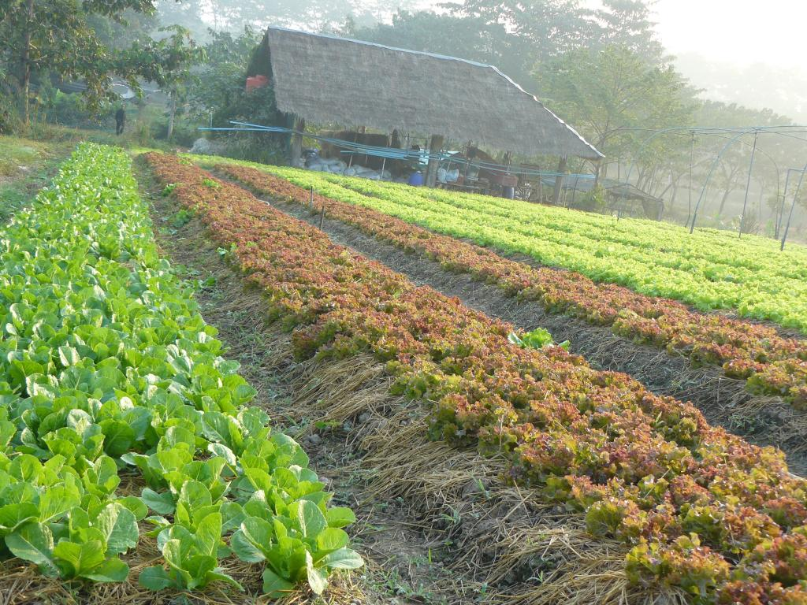

ประโยชน์เน้น ๆ |
1.ส่วนประกอบทุกอย่างมาจากธรรมชาติ ไม่ว่าจะเป็นพืชผัก ผลิตภัณฑ์
หรืออาหารออร์แกนิคไม่มีการนำสารสังเคราะห์ใดๆมาใช้ในทุกขั้นตอน
ทำให้ปลอดภัยต่อผู้บริโภคและเกษตรกรผู้ผลิตและเป็นมิตรต่อสิ่งแวดล้อม
|
|
2.ไม่ก่อให้เกิดมลพิษในกระบวนการผลิตออร์แกนิคเกิดจากระบบนิเวศน์ที่สมดุล
ทุกขั้นตอนในการผลิตช่วยลดมลพิษให้กับธรรมชาติ
ส่งผลให้สิ่งมีชีวิตทั้งระบบมีความสมบูรณ์ |
|
3.ออร์แกนิคมีประโยชน์ต่อสุขภาพของคนเรา
เพราะช่วยลดภาวะเสี่ยงต่อโรคร้ายที่มีสารเคมีเป็นสาเหตุหลัก |
 |
4.ออร์แกนิค เป็นผลิตภัณฑ์ที่ปลอดสารพิษ ไม่เป็นภัยต่อมนุษย์ สัตว์และสิ่งแวดล้อม
เป็นอีกวิธีหนึ่งในการช่วยอนุรักษ์ดิน น้ำ และสิ่งแวดล้อมให้คงอยู่อย่างเป็นธรรมชาติ |
 |